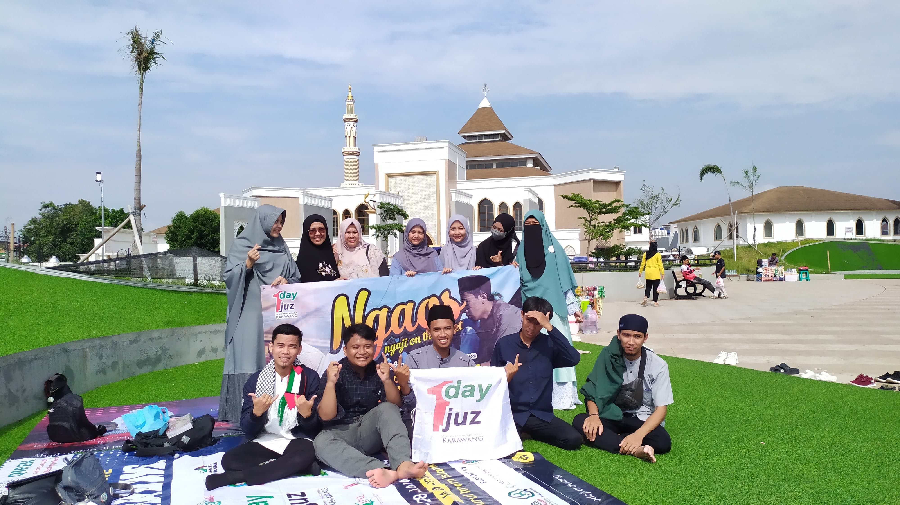
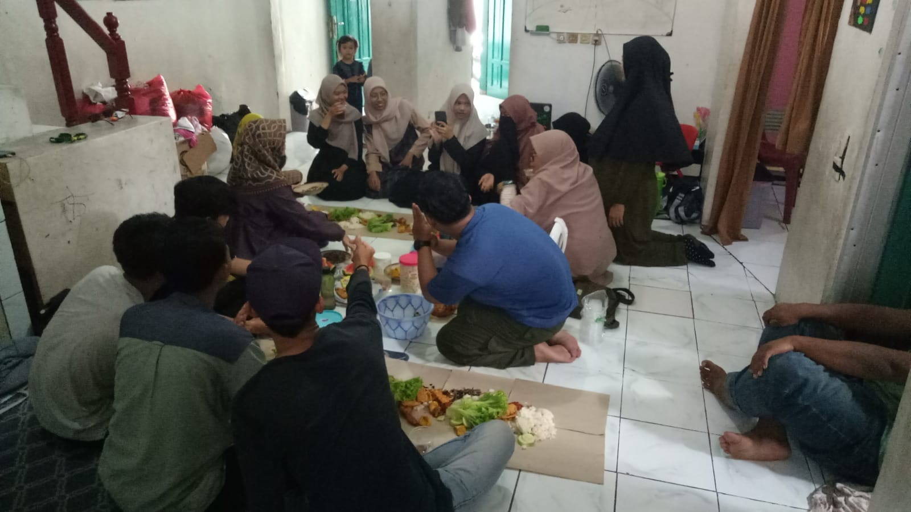
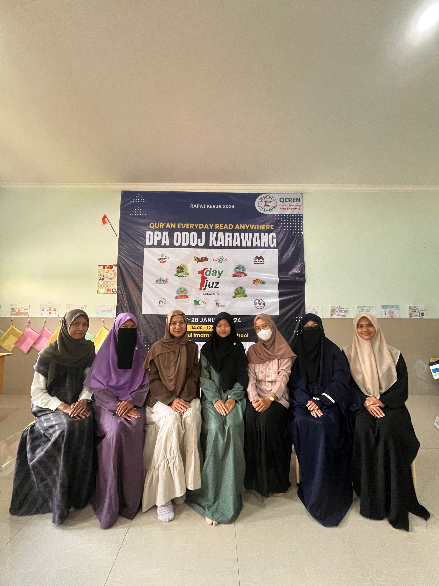
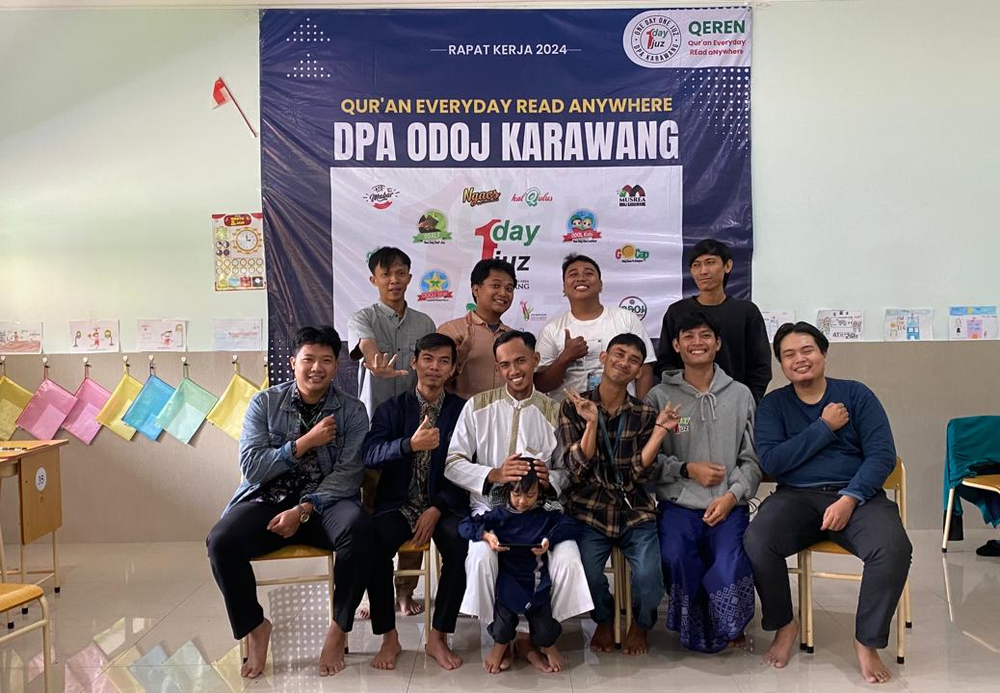
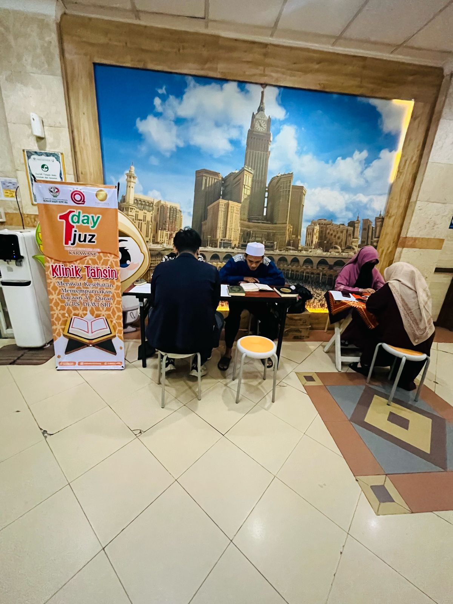
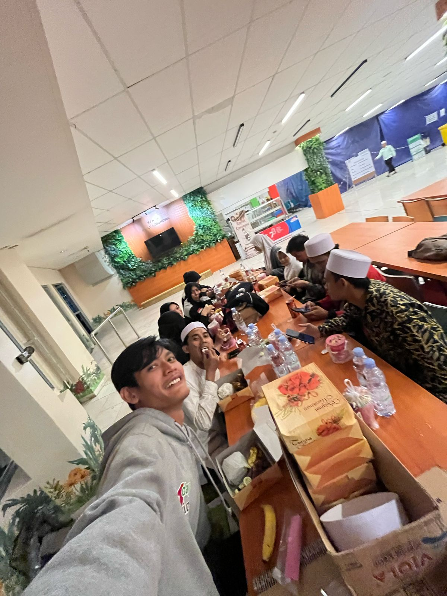
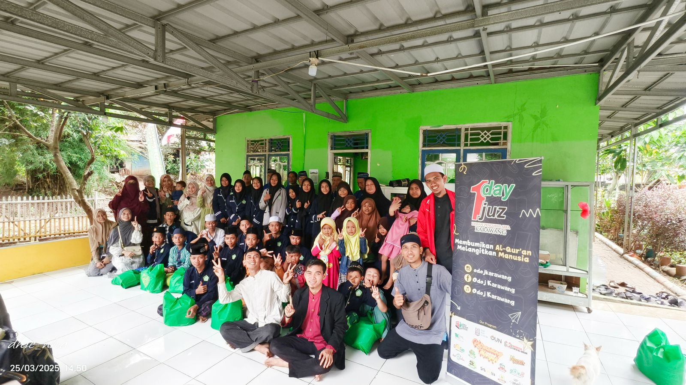

Hari ini kurendahkan diriku, kulupakan kesombonganku, kutundukkan kepalaku, lalu kududuk terpaku di depan jendela hatimu, menanti pintu maafmu, terbuka untukku. Selamat Hari Raya Idul Fitri, Mohon maaf lahir dan batin.
One Day One Juz Karawang
Pantun islami dari youtube Odoj karawang
Foto-foto acara odoj karawang







Hari Raya idul fitri
"Setelah satu bulan penuh berpuasa dan beribadah, kita telah mencapai hari kemenangan. Semoga Idul Fitri ini membawa kita lebih dekat kepada Allah SWT dan memperkuat komitmen kita untuk membumikan Al-Qur'an dan melangitkan manusia.
Kita telah melewati bulan Ramadan dengan penuh perjuangan dan kesabaran. Kita telah berpuasa, berqiyamulail, dan berzikir untuk mendekatkan diri kepada Allah SWT. Dan sekarang, kita telah mencapai hari kemenangan, hari Idul Fitri.
Minal Aidzin Wal Faidzin! Semoga kita semua dapat merayakan hari kemenangan ini dengan penuh kebahagiaan dan kesyukuran.
Saya juga ingin memanfaatkan momentum ini untuk memohon maaf lahir dan batin kepada seluruh anggota One Day One Juz. Mohon maaf atas segala kesalahan dan kekurangan yang telah saya lakukan selama ini. Saya berharap kita semua dapat memaafkan satu sama lain dan memulai kembali dengan hati yang bersih.
Secara pribadi, saya ingin memohon maaf kepada seluruh anggota One Day One Juz yang telah saya sakiti atau saya kecewakan. Saya berharap kita semua dapat memaafkan satu sama lain dan memulai kembali dengan hati yang bersih.
Terima kasih atas kebersamaan kita, One Day One Juz! Selamat Hari Raya Idul Fitri! Semoga kita semua dapat merayakan hari kemenangan ini dengan penuh kebahagiaan dan kesyukuran."
Minnal 'Aaidiin Wal Faaiziin, mohon maaf lahir dan batin🙏😊